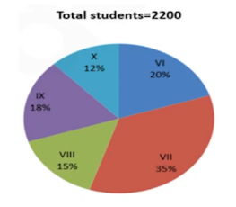

Study the pie chart carefully and answer the questions. The pie chart shows the percentage breakup students in different classes from VI to X in the year 2017

1. The total number of students study in class VI and class IX together is approximately what percentage more than that of the total number of students study in class X?
Ans - C
Study the pie chart carefully and answer the questions. The pie chart shows the percentage breakup students in different classes from VI to X in the year 2017
2. If in class VI, the ratio of boys to girls is 6:5 and the total number of girls in class VI is 50 less than that of the total number of girls in class VII. Find the ratio of the total number of boys in class VI to class VII.
Ans - D
Study the pie chart carefully and answer the questions. The pie chart shows the percentage breakup students in different classes from VI to X in the year 2017
3. If the total number of boys in class VIII is "x" and the total number of boys in class IX is "x+40". The total number of girls in class VIII and class IX together is 306. Then find the value of "x".
Ans - A
Study the pie chart carefully and answer the questions. The pie chart shows the percentage breakup students in different classes from VI to X in the year 2017
4. What is the difference between the total number of students in class VII and class VIII together to that of the total number of students in class IX and class X together?
Ans - C
Four circles having equal radii are drawn with centres at the four corners of a square. Each circle touches the other two adjacent circle. If remaining area of the square is 168 cm square, what is the size of the radius of the circle? (in centimeters) (take π = 22/7)
Ans - B
A man wants to invest Rs. 16850 in bank account of his 2 sons, whose ages are 12 years & 16 years in such a way so that they will get equal amount at an age of 120 years at the rate of 33(1/3)% compounded annually. Find the share of younger son?
Ans - A
A bag contains 5 red and 7 white balls. Four balls are drawn out one by one and not replaced. What is the probability that they are alternatively of different colours?
Ans - C
The ratio of the age of Ram and Rahim 10 years ago was 1 : 3. The ratio of their age five years hence will be
2 : 3. Then the ratio of their present age is
Ans - B
"A" can complete a piece of work in 8 days,while "B" is 20% more efficient than him. A works for 2 days,then B works for 1 day, and the cycle continues like this.in how many days would the work be completed?
Ans - A
The simple interest (p.a.) accrued on an amount of Rs 17,000 at the end of four years is Rs 6,800. What would be the compound interest (compounded annually) accrued on the same amount at the same rate in two years?
Ans - C
Find the missing number in the given seriese.
2, 7, 10, 22, 18, 37, 26,?
Ans - B
Find the missing number in the given seriese.
12, 12, 18, 45, 180, 1170, ?
Ans - A
Find the wrong term in the series
2, 3, 10, 38, 172
Ans - D